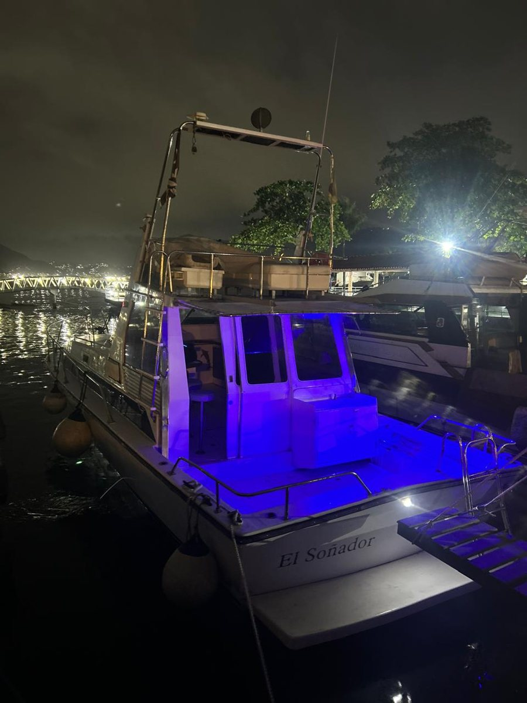

Viva la Vida · lancha El Soñador
4 propostas de site
Abra cada uma no celular e veja qual combina mais com a empresa. Fotos e textos são os mesmos; muda o jeito de contar o passeio.
 1 · HorizonteO céu vai da tarde à noite enquanto você rola a página.→
1 · HorizonteO céu vai da tarde à noite enquanto você rola a página.→
 2 · EmbarquePainel de saídas e cartões de embarque para cada roteiro.→
2 · EmbarquePainel de saídas e cartões de embarque para cada roteiro.→
 3 · Carta NáuticaMapa da Baía de Guanabara com zoom em cada rota.→
3 · Carta NáuticaMapa da Baía de Guanabara com zoom em cada rota.→

4 · StoriesO passeio contado em stories, com links de reserva.→